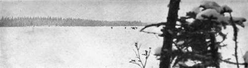
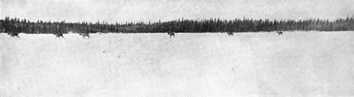

The Barren-Ground Caribou. Part 8
Description
This section is from the book "Wild Life In Canada", by Angus Buchanan. Also available from Amazon: Wild Life in Canada.
The Barren-Ground Caribou. Part 8
If you have found Caribou country in winter, and can put up with intense cold, you will find that the actual shooting of these animals is not difficult. They are stupid animals once you have frightened them with a shot, and if you get within reasonable range of a band on a lake you are certain to bag more than one of them, if you are anxious to secure meat or particular trophies, for if you bring down one with your first shot, and run on when they run, the others will almost certainly halt before they have gone far to look back for their comrade or to make certain where danger lies, and you will have opportunity for further shots. To give an instance of this : on one occasion a band of twelve Caribou came on to the lake where my cabin stood. This was bringing dog-feed to my very door if I could effect a kill-and the distance you have to carry meat from the point you kill to your camp is no inconsiderable detail if time and labour and sled-dogs are to be saved. Therefore I snatched up my rifle and a handful of cartridges and eagerly gave chase. Before long, by hard running and quick shooting, I had six carcasses lying one beyond the other in wake of the confused sheep-silly band, before the Caribou got into the forest at the north end of the lake; and if cartridges had not given out I believe very few would have got away. This illustrates what I have said, and what I have often experienced, for each time I fired the band started away, and I after them, until they made that fatal halt to look back, when I would halt also, and pause to fire again- and so on, with the above result.
Caribou Resting- On A Frozen Lake
Caribou Travelling In Typical Indian File
The best range at which to shoot Caribou is, in my experience, inside one hundred yards, and to shoot to kill the animal with a clean shot, for a wounded animal, badly hit, that gets away, is not pleasant to think of, especially as one may know that the poor animal will freeze to death once it ceases travelling. Again, a wounded animal that you might follow may take you miles off the course you happen to be travelling, and through overgrown country that you cannot afterwards take a dog-sled into, to gather the meat, in the event of your killing the wounded animal.
I have killed animals outright with .303 Ross rifle at 312 paces, and 447 paces, when I had no alternative, but, irrespective of marksmanship, those distances are too great to make certain of clean kills. Shooting in intense cold, unless you have a special-fingered glove and can shoot with it on, you will almost certainly get the fingers of your right hand frozen, if you fire more than one or two shots in succession with the bared hand which you have taken from the heavily lined deerskin mitten. I've had all the fingers of my shooting hand frozen, sometimes down to the second joint, but if attended to at once and thoroughly chafed with snow there are no serious consequences-nothing but the sharp pain of reviving circulation, and, sometimes, the skin will afterwards blacken and peel off.
I turn now to the Indians, and the extent of their Caribou hunting. It has been said that Indians kill less with modern weapons than they did in the past by primitive methods, but I think such a statement should be taken with reservation. I grant that Indians, as a rule, are indifferent marksmen, but it is well to remember that what they lack in that respect they more than make up for in bushcraft. They are undoubtedly skilled hunters, keenly intelligent hunters with a second sense-a wild sense which is essentially Indian and which makes it possible for them to get very close to animals, much in the crafty, patient manner of prowling wolf or fox that manoeuvre to outwit and come within striking distance of their prey.
On October 21, 1913, an Indian of Fort Du Brochet was returning after dark on the ice of Reindeer Lake, after setting out a trap-line, when he heard the muffled thunder of countless Caribou passing north-east over the ice. No Caribou had been seen until then. It was the hour of their coming. This Indian got back to the Post in great excitement and soon spread the glad news among the half-dozen cabins on the lake shore. The following morning at the first faint light of dawn, the hunters of the settlement went out to kill, while the Caribou continued to pass all day over the same route which herds had been tramping over all night-a route which was in full view of the Post when day broke. During the hunt that followed two Indians killed sixty Caribou, and three others, forty-four Caribou : a total of one hundred and four Caribou to five rifles. This was a good kill, for the conditions were perfect, since the Caribou had been found Jin the full flood of their migration, and no distance from camp. And is it not a better bag than five men would obtain by snare, and spear, and muzzle-loading gun, in primitive hunting ? for, as I describe below, it apparently took a much greater number of men to effect any like large capture in the past.
The method of killing Caribou in numbers in the past, in the territory immediately south of the Barren Lands, I here recount as more than one veteran Indian has described it to me : In olden days Caribou were largely caught in snares. The Chipewyan tribe in the whole neighbourhood combined in one grand hunt at the season of the Caribou migration. It was their custom to select a locality in the forest which they knew to be much favoured by Caribou, and there set snares, made of stout " babiche" (leather thong), by hanging them, at a height to form a head noose, between stout trees wherever old Caribou paths passed. They would set a hundred or more snares in this manner before The Tray was complete; whereupon the hunters who were armed with spears and muzzle-loaders took up their positions so as to watch the trap and encircle it when the Caribou approached. Thereafter they set themselves to wait and watch for the approaching herds, and sometimes they had to keep vigil for days. When Caribou came a large number were allowed to pass inside the watching cordon of Indians, who then formed a wide ring and commenced to humour them onward into the way of the snares. When the animals were fairly entrapped the Indians would close in from all sides, driving the Caribou to their doom, and shooting them down or spearing those that tried to escape. Sometimes none of the herd escaped (asserted to be as many as two hundred in some instances), all falling prey to the Indians' skill and active watchfulness. If one bears in mind the sheep-like tendency of Caribou to lose their heads when thoroughly alarmed, it will be understood better how hunting in this manner was practicable to men with endless resource in bushcraft.
Continue to: